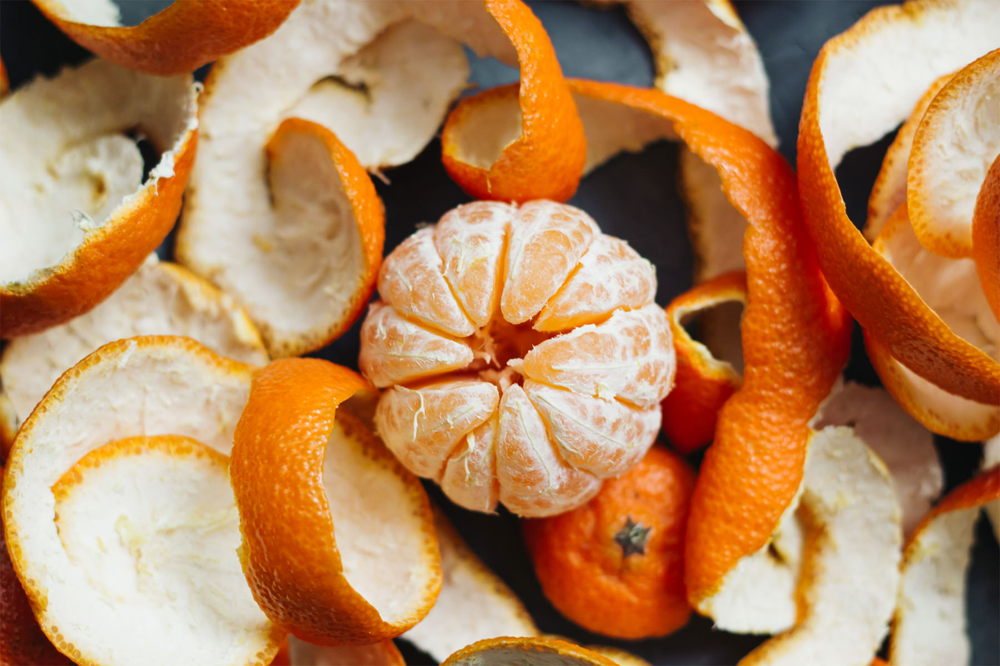
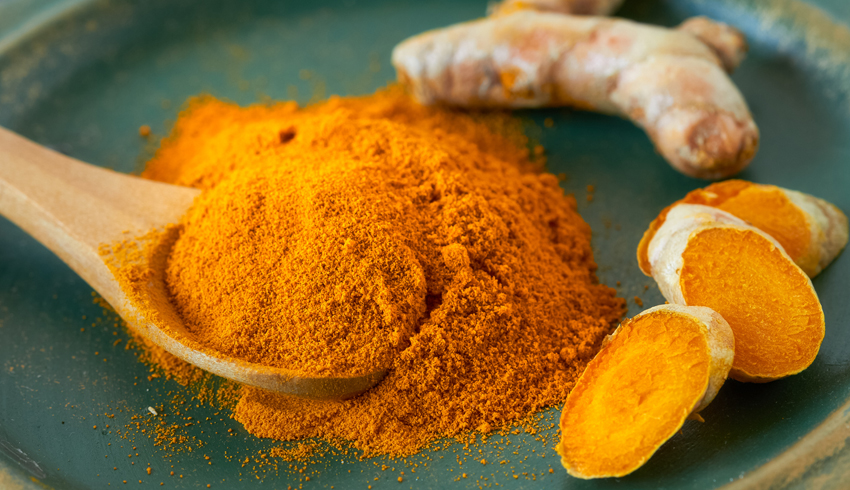

<!DOCTYPE html>
<html lang="eng"></html>

<head>
    <meta charset="UTF-8">
    <Title>How to use it</Title>
</head>

<body>

       <h1><strong>Try These Orange Peel Face Pack For Glowing Skin.</h1></strong>
       <hr/>
       <h3><strong><p>We're gonna add a new step to our beauty regime for a bright glowing skin by using the orange peel powder.</p></strong></h4>

       <br>

       <u>Ingredients</u>
          <li>Orange Peel Powder</li>
          <li>Turmeric</li>
          <li>Honey</li>

       <p>Take 1 tbsp orange peel powder,just a pinch of cosmetic turmeric and 1 tbsp of natural honey.
          Mix everything well into a fine paste.
        Apply on the face and neck,and wash off after 5-10 minutes with any gentle face cleanseror rose water.
        If your face is dry after this mask,use a drop of coconut or olive oil as a natural moisturizer.
       </p>
        
        <br>
        
        <body style="background-color: white;">
        <h2><u>Benifits of using orange peel powder for skin.</h2></u>
        <h3>Orange Peel Powder :</h3>
        

        <p>Orange are rich in vitamin C,calcium thiamine,folate and potassuim, which gives us beautiful bright skin.
           Do you know the orange peels have more time vitamin C contest than the fruit itself.
           Vitamin C is vital for your skin health and it may also help you to protect your skin from harsh ultraviolet rays.
           The calcium in them helps to regenrate your skin by renewing your skin cells.
        </p>

        <h3>Honey:</h3>
        
        <p>Honey is powerful antibacterial and antiseptic agent slows down the aging process of skin by fighting off free radicals,
            and moisturizer the skin.
        </p>

        <h3>Turmeric:</h3>
        
        <p>Adds natural glow to your skin,Turmeric is considerd to be a potent Ingredient for skin lightning and revealing glow,great way to get ride of sun tan,
         it is known to improve skin tone while reducing dark spots and patches.The skin whitening effect of turmeric is attributed to its anti-inflammatory and antioxidiant properties.</p>
         
      <br>
      <P><strong><mark>Homemade face mask are filled with nature's restorative goodness,in the form of the nutrients,minerals,acide and oils explained in tables below link,without any of the chemicals that store -bought masks have to contain for extend shelf life,
         Save your money and save yourself from the chemical damage and make your own homemade skin products.</strong></mark>
      </P>
        
      <ul>
     <li><a href="O&H.webp">EASY DIY</a></li> 
     <li><a href="Benefits.png">BENIFITS</a></li>
      </ul>
         
      
       
      
</body>
</html>